.svg)
CSS Units - When to Use rem, em, px and
More

CSS units allow you to measure and specify different property values.
You use them to modify CSS properties
such as margins, padding, height,
and width to make them
compatible with devices of all screen sizes.
CSS units have two basic types:
- Absolute units
- Relative units
Absolute units are fixed and do not depend on the size of the parent element
or the viewport. Examples of absolute units are pixels (px), points (pt), and
centimeters (cm).
Relative units, on the other hand, are flexible – and just as the name implies,
they are relative to the parent element’s size, the viewport’s size, or the root element’s
font size.
Since there are a number of CSS unit types, you might have trouble deciding which unit to
use for a particular measurement. This article will demonstrate the best use cases for each
of these units. We'll focus on the most important and frequently used CSS units here: rem, em, vh,
vw, %, and the all too familiar absolute unit – px.
Table of Contents:
- Rem (rem)
- Em (em)
- Percentages (%)
- Viewport height (vh)
- Viewport width (vw)
- [ch](#heading-ch)
- Pixels (px)
Rem (rem)
The rem unit in CSS stands for "root em". It is a relative unit of measurement that is relative to the font size of the root element. One rem is equal to the font size of the root element. The root element defaults to 16px in many browsers, so 1rem is equal to 16px. Let's look at an example to see how you can use rem: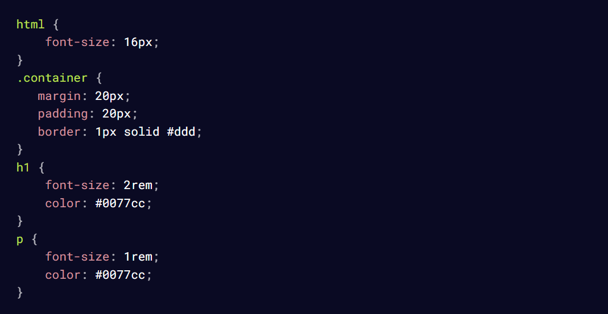
The h1 element is set to 2rem which means that it's two times the root
element,
the html element. 2 x 16px = 32, so the h1 element is 32px.
Here's the root element at 16px:

The font-size when the root element is at 16px
Then in the below image, the root element was set to 20px so 2rem of the
h1
element is 2 x 20px making the h1 text 40px.
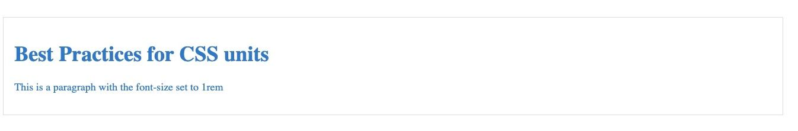
The font-size when the root element is at 20px
In your code editor, as you change the base font size in the HTML selector
of the CSS
file, you can see how the font sizes defined in rem units also
adjusts equally.
By using rem units, you can easily scale the font size of the body elements
proportionally
to the HTML font size.
It's a good idea to use rem to set font sizes because it is designed to adapt
to the user's
browser preferences. This helps with accessibility. It is also
good for consistent scaling,
as changing the HTML font size will affect the
elements with rem units.
Using rem or em for padding or margin also offers advantages in terms
of providing a scalable
and maintainable design. When you change the font
size at the top level, all rem values
automatically gets updated and adjusts
according to the base front size. rem or em should
be used for margin or
padding depending on if you want the element to be relative to the
root
element or the parent.
Em (em)
Similar to rem, em is a relative unit of measurement. But unlike rem, em isrelative to the font size of the parent element or the font-size of the nearest
parent with a defined font size.
Let's look at an example:
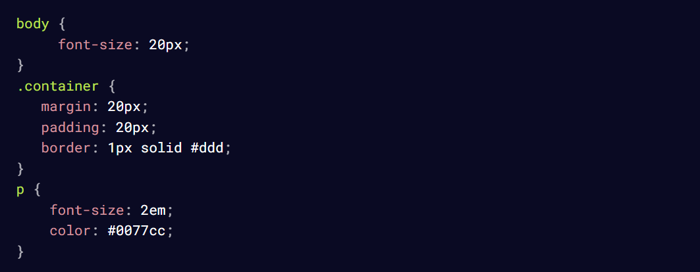
The p element is set to 2em which means it is 2 times the font size of the
parent element.
2 x 20 is 40px so the p element is 40px.
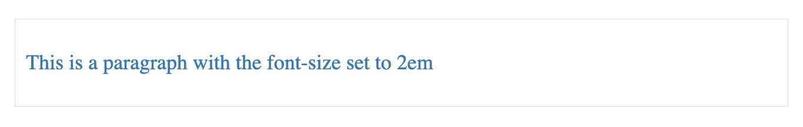
The font-size of the paragraph element set at 2em
Let's look at another example
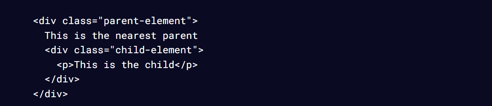
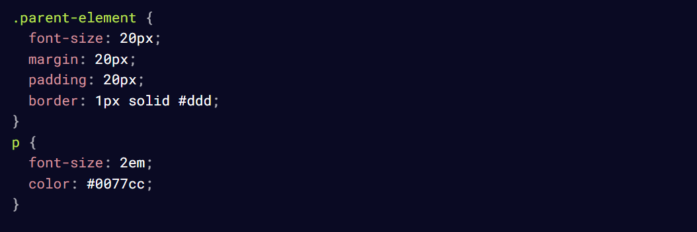
Here, the font size of the child-element is set to 2 times that of the parent
element.
That makes it 40px (2 x 20).
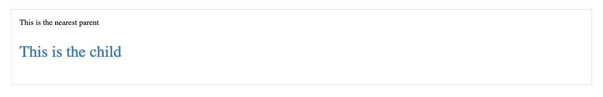
The font-size of the child-element at 2em of the parent-element
If you need to scale an element to be consistent with the parent,
then em is
the right direction to go in. em is good for creating scalable
and responsive
designs.
It is recommended to use em for setting margin and padding. When you use
em for
margin and padding, they adjust according to the font size of the
parent element.
This creates a consistent design, especially when users
adjust their browser's
default font size. When you set margin or padding
with em, the layouts also
become more flexible and adaptable, and
elements can scale in proportion.
em is also important for media queries to enhance responsiveness and
adaptability.
Percentages (%)
Percentages are relative units that render an element relative to the size ofthe element's parent. They serve as a percentage of their containing block
and are always relative to their nearest parent.
Here's an example:
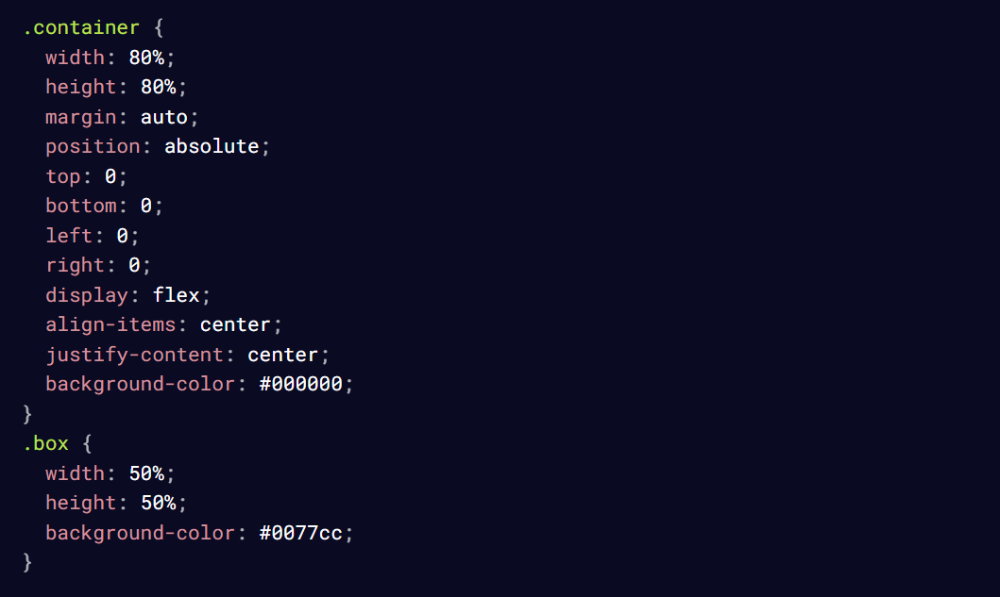
Here, the box element is 50% the width and height of the parent container,
so it
takes up half of the container.
The container is 80% of the viewport by width and height. If you try to
resize the
browser, you will notice that the percentage is maintained.
Similarly, the box within
the container is 50% of the container by width and
height.
The box element at 50% of its containing element
When you want an element to take up a certain amount of the containing
block, then you should go with percentages.
Percentages can be used for positioning elements relative to their
containing element. This comes in handy when creating layouts where
elements need to be positioned based on a percentage of the parent.
Setting widths and heights in percentages also allows elements to scale
relative to their containing element.
Viewport height (vh)
vh is a relative unit of measurement that represents the visible height areaof the browser window.
Here's an example of how it works:
This code snippet shows the viewport-height element
set t0 100vh so it
covers all of the viewport height.
.jpeg)
The viewport area covered by 100vh
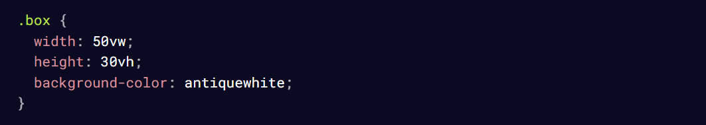
Let's change it slightly:
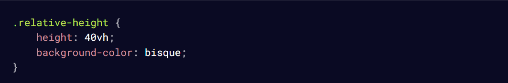
In the above example, the relative-height element is set to 40vh,
so it
covers that fraction of the viewport height.
.jpeg)
The viewport area covered by 40vh
Using vh for height allows elements to maintain the set height of the
viewport.
This is particularly useful when you want an element to take up a
certain
percentage of the screen's height.
vh can also be used to set font sizes that are responsive to the viewport
height.
This is useful for responsive typography. When you don't want an
element to be
relative to the parent, you can use vh.
There can be inconsistencies in the way devices interpret the vh unit due
to variation
in browsers so make sure you use it with caution to prevent
problems.
Viewport width (vw)
vw is similar to vh but vw refers to the width of the browser window. It is
used to set elements based on the horizontal axis of the browser window.
Here's an example:
Here, the box is specified as 50vw of the overall viewport width. As the
browser
shrinks and increases, watch how the box adjusts to maintain the
specified width.
The box element occupying 50% of the viewport width
vw is particularly useful and encouraged when you want an element to take
a
certain width of the viewport. vw is also used for font sizes in media query
for responsive typography.
ch
ch is a relative unit that scales based on the width of characters. 1ch isequal to the width of the "0" character in the current font.
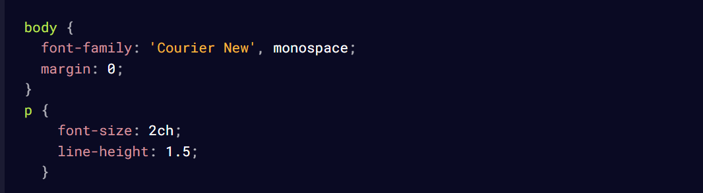
The font size of the text inside the [p] element is set to be twice the width
of
the "0" character in the current font.
ch is particularly useful for defining the max character length on a single
line.
It provides a size relative to the width of characters, making it flexible,
adaptable, and enhances readability. It allows you to set a max-width for
text
containers based on the width of characters.
Pixels (px)
px is an absolute unit of measurement used to specify length and sizes. px
is a fixed unit and should be used sparingly and with caution for responsive
design.
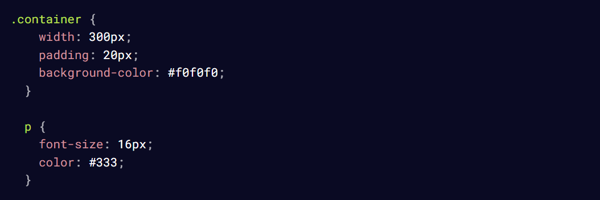
In this snippet, the size of the [p] text remains a certain size. It remains
fixed
at 16px and doesn't change regardless of whether the
size of the browser changes.
When you resize the browser, you will observe that the container doesn't
scale
according to the viewport, and neither does the text scale according
to the container.
The main reason why using px is not always recommended for responsive
design lies in
its fixed nature. Unlike relative units, such as percentages, em,
rem, and viewport
units (vw, vh), px does not adjust based on the user's
preferences or the size of the
viewport.
px is useful when you want to specify a fixed size of an element, such as a
border size
or an image size.
An example:
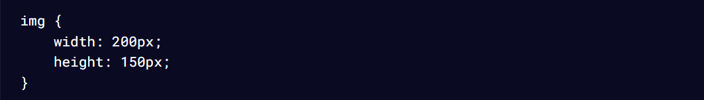
Conclusion
These are the most frequently used units in CSS, so it's important to befamiliar with when to use them.
To set font sizes, you'll commonly use rem or ch. For width, percentages
are often recommended. You can also consider using vw and ch. For
height, consider using %, rem, or vh.
For padding or margin, you'll typically use rem or em depending on your
specific requirements.
Feel free to refer back to this article whenever you need guidance on the
best units for setting measurements or lengths.
Thanks for reading!